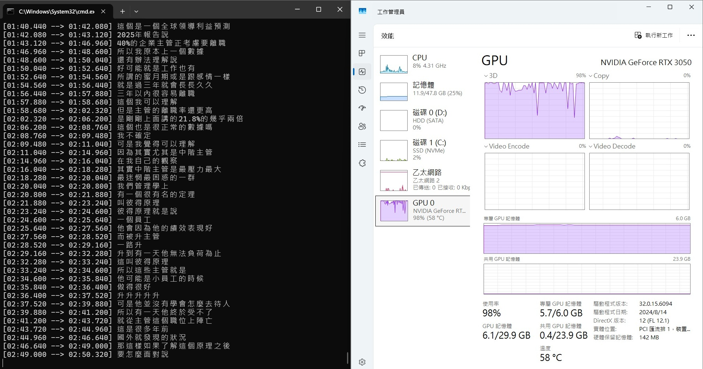

Whisper 介紹
Whisper 是 OpenAI 開發的自動語音辨識模型
可以把「人講話的聲音」轉成「文字」
對於影片創作者
可以自動產出 SRT/VTT 字幕檔
匯入後製軟體後再修正內容
或是直接匯入 YouTube 後台 (CC 字幕)
不必從頭到尾都自己從頭開始
對於會議紀錄人員
可以把錄音檔轉成逐字稿
那我自己的話
就是拿來把影片或 Podcast 轉成逐字稿
再丟進 AI 快速摘要重點
本地端與雲端版本
Whisper 分為 本地端(Local) 與 API (雲端)
| 比較項目 | 本地端 | 雲端 |
|---|---|---|
| 費用 | 完全免費（僅需電腦電費） | 付費（目前每分鐘 $0.006 美金） |
| 硬體要求 | 要有 NVIDIA 顯卡 | 只要能連網，老舊電腦也能跑 |
| 處理速度 | 取決於你的顯示卡 | OpenAI 伺服器會幫你處理好 |
| 隱私性 | 檔案不會離開電腦，適合機密會議 | 檔案需傳輸到 OpenAI 伺服器 |
如果你有資安與隱私需求
而且有不錯的電腦設備
就可以使用本地端(Local)版本
本篇文章主要介紹本地端版本
目前主流的本地端版本
| 版本名稱 | 特色與優勢 |
|---|---|
| OpenAI Whisper (官方原版) | 官方維護，最標準的 Python 庫 |
| Faster-Whisper | 使用 CTranslate2 引擎重新實作，速度快 4 倍，記憶體用量減少 50% |
| Whisper.cpp | 用 C/C++ 語言重新編寫，針對 CPU 進行優化 |
| WhisperX | 時間精確度最高 (到單字級別)、可辨識誰說了什麼 (說話人分離) |
OpenAI Whisper (官方)
我們先嘗試官方版本的 Whisper
Whisper 安裝
- 安裝 Python
- 新增一個專案資料夾叫
whisper - 在此資料夾位置開啟 CMD
- 建立虛擬環境
python -m venv venv - 啟動虛擬環境
.\venv\Scripts\activate - 安裝 Whisper
pip install -U openai-whisper - 檢查是否安裝成功
whisper --help，應該會出現各種參數訊息
ffmpeg 安裝
- 到 gyan.dev 下載
ffmpeg-release-full.7z - 解壓縮後，把 bin 資料夾中的三個檔案放到專案資料夾中
|
|
模型版本
Whisper 有不同大小的模型
越大精準度越高，但也越吃效能
| 模型名稱 | 檔案大小 | VRAM 用量 | 相對速度 | 準確度 |
|---|---|---|---|---|
| Tiny | ~75 MB | ~1 GB | 10x (最快) | 低 |
| Base | ~140 MB | ~1 GB | 7x | 中低 |
| Small | ~460 MB | ~2 GB | 4x | 中 |
| Medium | ~1.5 GB | ~5 GB | 2x | 高 |
| Large-v3 | ~3 GB | ~10 GB | 1x (基準) | 最高 |
中文的話推薦使用 Medium 模型
速度跟準確率適中
開始使用
- 將要轉換的影片或音檔放入資料夾中
- 執行
whisper video.mp4 --model medium --language zh --device cuda
video.mp4: 來源檔案，ffmpeg 會提取音訊出來--model medium: 模型等級--language zh: 使用中文來辨識--device cuda: 使用 NVIDIA 顯示卡加速 (若不指定預設用 CPU 跑)
結果發生了錯誤，最後一段寫了
|
|
Whisper 想要使用顯卡（CUDA），但 PyTorch 環境偵測不到顯卡
但我電腦確實有 RTX 3050 的顯示卡
- 移除現有的 PyTorch
pip uninstall torch torchvision torchaudio -y - 安裝 CUDA 版本的 Torch (v12.1)
pip install torch torchvision torchaudio --index-url https://download.pytorch.org/whl/cu121 - 檢查是否安裝成功
python -c "import torch; print(torch.cuda.is_available())"，如果回傳 True 代表成功 - 再次執行
whisper video.mp4 --model medium --language zh --device cuda
成功啦
GPU 使用量飛到 100%
CMD 也會顯示目前處理的進度

使用 3050 顯卡+ medium 模型
測試 52 分 30 秒的檔案
花費了約 24 分鐘
大概就是 2 倍速！
總共產出了五種格式的檔案: .srt, .vtt, .txt, .json, .tsv
.srt: 帶有時間的字幕檔，可匯入後製軟體
|
|
.vtt: 與 SRT 類似，可直接適用於網頁播放器
|
|
.txt: 純文字逐字稿，適合丟進 AI 作重點整理
|
|
.json: 用於程式開發與深度分析，除了時間軸和文字，它還包含了 Whisper 內部的評分，例如：「信心分數」（AI 覺得自己聽得準不準）和「靜音檢測」等資訊
|
|
.tsv: 用於 Excel 整理、資料庫匯入，用 Excel 打開會分成 start (開始時間)、end (結束時間)、text (內容) 三欄
|
|
如果只想要產出一種檔案，例如 .srt
可以使用 --output_format
|
|
檢查了一下準確度
有些字和專有名詞有打錯
所以需要人工再檢查一次
但比從零開始快多了！
中英數 文交雜也是可以辨識出來
句子分段跟時間軸也都 OK
Faster-Whisper (社群)
如果想要更快
可以試試看 Faster-whisper
- 安裝主程式
pip install faster-whisper - 安裝指令工具
pip install whisper-ctranslate2 - 開始轉換
whisper-ctranslate2 video.mp4 --model medium --language zh --device cuda
在一樣的設備和檔案下
花費了約 6 分鐘
比官方 whisper 快了 4 倍！